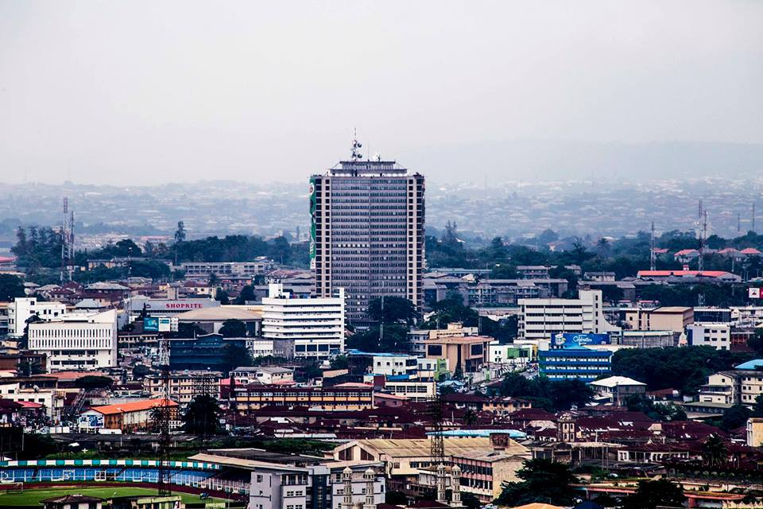

A story is a recounted experience with a lesson so not only have I recounted my experiences but have also spelt out lessons learned, hoping to pass them on to as many as will read this. All the SDGs sum up to one whole solution “love thy neighbor as thyself”; from alleviating poverty to fostering gender equality and bridging the gap to reduce inequalities, the answer lies in choosing to prioritize the next person’s welfare as you would you own. The year 2020 has been the most eventful year for most of us especially the millennials. We have come face to face with life-threatening and changing experiences from the pandemic to the protests. One thing that became very evident through it all was the power of COMMUNITY. We stood together on agreeable grounds both to fight the ravaging pandemic and in voicing out our grievances. The strength in our voices resounded across the world through different media and we experienced a unity we hadn’t know existed. In the same light, as we work towards building resilient cities that would withstand the shocks of the coming years, we should make a priority of fostering the spirit of community and that involves “leaving no one behind”.
